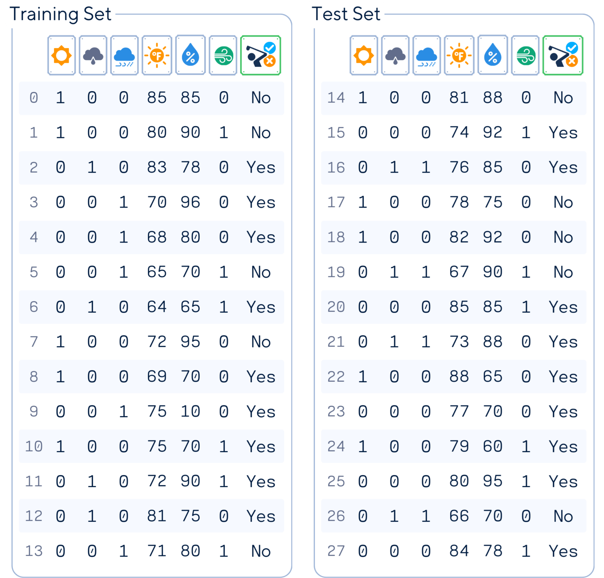

A fresh look on our favorite upside-down tree
Samy Baladram
Decision Trees are everywhere in machine learning, beloved for their intuitive output. Who doesn’t love a simple "if-then" flowchart? Despite their popularity, it’s surprising how challenging it is to find a clear, step-by-step explanation of how Decision Trees work. (I’m actually embarrassed by how long it took me to actually understand how the algorithm works.)
So, in this breakdown, I’ll be focusing on the essentials of tree construction. We’ll unpack exactly what’s happening in each node and why, from root to final leaves (with visuals of course).
A Decision Tree classifier creates an upside-down tree to make predictions, starting at the top with a question about an important feature in your data, then branches out based on the answers. As you follow these branches down, each stop asks another question, narrowing down the possibilities. This question-and-answer game continues until you reach the bottom – a leaf node – where you get your final prediction or classification.
Throughout this article, we’ll use this artificial golf dataset (inspired by [1]) as an example. This dataset predicts whether a person will play golf based on weather conditions.
Columns: ‘Outlook’ (already one-hot encoded to sunny, overcast, rainy), ‘Temperature’ (in Fahrenheit), ‘Humidity’ (in %), ‘Wind’ (yes/no), and ‘Play’ (target feature)
# Import libraries
from sklearn.model_selection import train_test_split
from sklearn.metrics import accuracy_score
import pandas as pd
import numpy as np
# Load data
dataset_dict = {
'Outlook': ['sunny', 'sunny', 'overcast', 'rainy', 'rainy', 'rainy', 'overcast', 'sunny', 'sunny', 'rainy', 'sunny', 'overcast', 'overcast', 'rainy', 'sunny', 'overcast', 'rainy', 'sunny', 'sunny', 'rainy', 'overcast', 'rainy', 'sunny', 'overcast', 'sunny', 'overcast', 'rainy', 'overcast'],
'Temperature': [85.0, 80.0, 83.0, 70.0, 68.0, 65.0, 64.0, 72.0, 69.0, 75.0, 75.0, 72.0, 81.0, 71.0, 81.0, 74.0, 76.0, 78.0, 82.0, 67.0, 85.0, 73.0, 88.0, 77.0, 79.0, 80.0, 66.0, 84.0],
'Humidity': [85.0, 90.0, 78.0, 96.0, 80.0, 70.0, 65.0, 95.0, 70.0, 80.0, 70.0, 90.0, 75.0, 80.0, 88.0, 92.0, 85.0, 75.0, 92.0, 90.0, 85.0, 88.0, 65.0, 70.0, 60.0, 95.0, 70.0, 78.0],
'Wind': [False, True, False, False, False, True, True, False, False, False, True, True, False, True, True, False, False, True, False, True, True, False, True, False, False, True, False, False],
'Play': ['No', 'No', 'Yes', 'Yes', 'Yes', 'No', 'Yes', 'No', 'Yes', 'Yes', 'Yes', 'Yes', 'Yes', 'No', 'No', 'Yes', 'Yes', 'No', 'No', 'No', 'Yes', 'Yes', 'Yes', 'Yes', 'Yes', 'Yes', 'No', 'Yes']
}
df = pd.DataFrame(dataset_dict)
# Preprocess data
df = pd.get_dummies(df, columns=['Outlook'], prefix='', prefix_sep='', dtype=int)
df['Wind'] = df['Wind'].astype(int)
df['Play'] = (df['Play'] == 'Yes').astype(int)
# Reorder the columns
df = df[['sunny', 'overcast', 'rainy', 'Temperature', 'Humidity', 'Wind', 'Play']]
# Prepare features and target
X, y = df.drop(columns='Play'), df['Play']
# Split data
X_train, X_test, y_train, y_test = train_test_split(X, y, train_size=0.5, shuffle=False)
# Display results
print(pd.concat([X_train, y_train], axis=1), 'n')
print(pd.concat([X_test, y_test], axis=1))
The Decision Tree classifier operates by recursively splitting the data based on the most informative features. Here’s how it works: